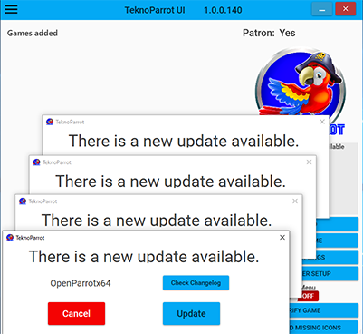
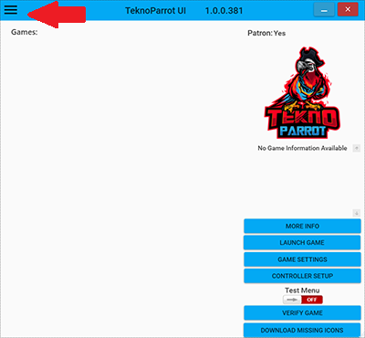
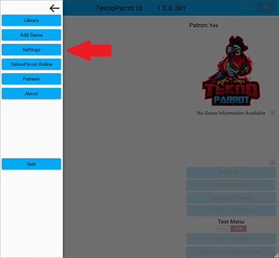

Get Started
1. Download Software
Head over to the Downloads page and download the following:
- TeknoParrot 1.0.0.140
- DirectX End-User Runtimes (June 2010)
- Visual C++ Redistributable Runtimes All-in-One
Also grab 7-Zip if you need software to open compressed archives (like .zip, .rar, .7z, etc.)
2. Setup Software
Install DirectX End-User Runtimes (June 2010) and Visual C++ Redistributable Runtimes All-in-One.
Sometimes TeknoParrot triggers a false positive with AntiVirus software. The software is completely safe. It is recommended to make a folder exception to keep your AV software from deleting critical files from your TeknoParrot folder.
Extract TeknoParrot_1.0.0.140.rar to a folder of your choosing, preferably the folder you made as an exception to your AntiVirus software.
3. TeknoParrot First Run
Launch TeknoParrot with TeknoParrotUi.exe. Click OK at the "Hello World" window. When you run it for the first time, you will see lots of pop-up windows asking you to update various things:
Keep clicking Update on each pop-up until there are no more. When updating TeknoParrotUI, it will ask you to restart TeknoParrot when done.
4. Settings
Open the settings menu via the "hamburger" icon at the top left:
Then click Settings:
Read through the options at the top and set to fit your needs. They are self explanatory.
One important option in here is the sTo0z Zone. This controls the % of joystick deadzone around the center of the stick. This is helpful in driving games to make it less "twitchy" when using a controller to steer. Most users seem comfortable using 16%-20%. It is not recommended to use this setting if you are using a wheel to drive.
For the wheel settings, you'll need to play around with them depending on your wheel. Most modern wheels have a separate axis for each pedal, so you probably want to check those in. If you are playing a driving game and you notice the car fully accelerates or fully brakes when you're not pressing on anything, you'll want to check in Reverse Axis Gas and Reverse Axis Brake.
Click Save settings when you're happy with everything.
5. Add a Game
To add a game, click that "hamburger" icon again, and then click Add Game.
TeknoParrot devs will never help you find any games, nor is it allowed to ask in the Discord. Owning or finding game files is on you. Find a game that you have extracted in the game list, and click Add Game after selecting it in the list.
You'll be sent back to the main TeknoParrot screen and you can see the game you added now in the list.
Now select GAME SETTINGS to setup the settings for the game you just added. Depending on the game you added, you will see different options in here. The primary things you want to set in here is the location of the game executable for the game you're setting up, and whether or not your using XInput (Xbox controllers) or not.
Once you've setup game settings to your liking, click Save settings and you'll once again be sent back to the main screen.
Finally, click CONTROLLER SETUP. This is where you'll setup the controls to the game you added. Click into each function that you want to set a button to, then press the button on your controller/wheel/keyboard.
Once you're done, click Save settings and you'll end up back at the main screen.
6. Run Game
If all is well, it's time to run your game! Click LAUNCH GAME and hopefully the game launches successfully, your buttons will be functional, and you'll be off having fun!
Sometimes games need specific steps to make them work, or fixes applied depending on your graphics card. Head over to the Compatibility page and find your game. Within a game page you will find any extra necessary setup instructions, fixes, or common issues.
If all else fails, please come join our Discord and the community will be happy to help you out.
Have fun!
Disclaimer
This site DOES NOT, and WILL NEVER, host or link to any game files or other copyrighted materials.
Thanks to Reaver, NTAuthority, avail, nzgamer41, Nezarn, nibs, Boomslangnz, Pooterman, Patreons, and all community members who support this project.